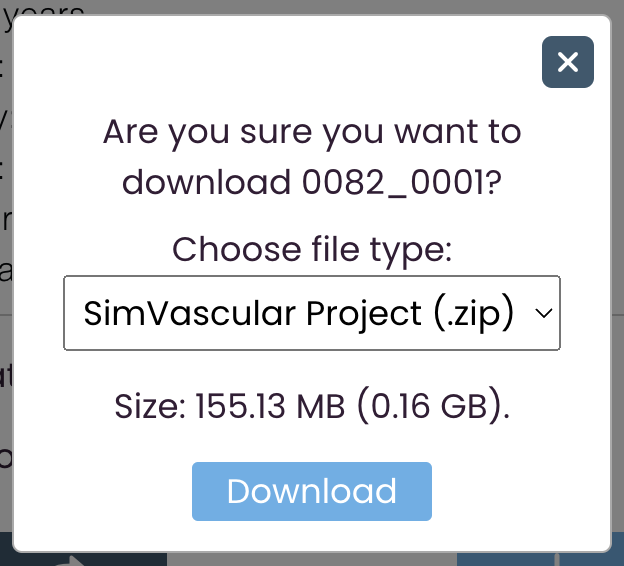
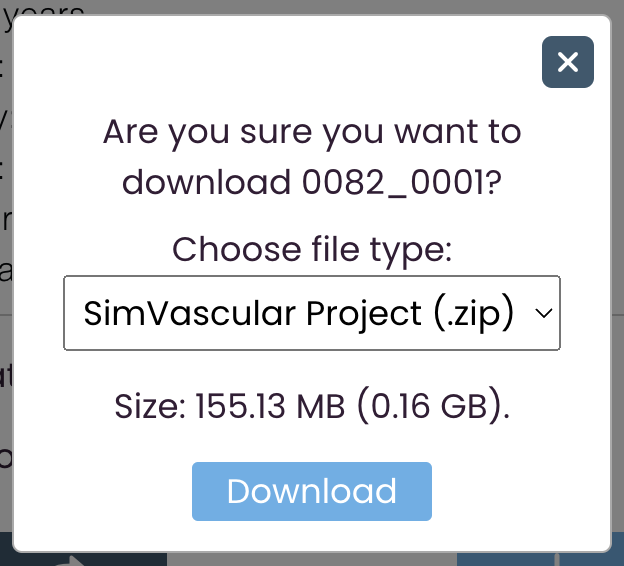
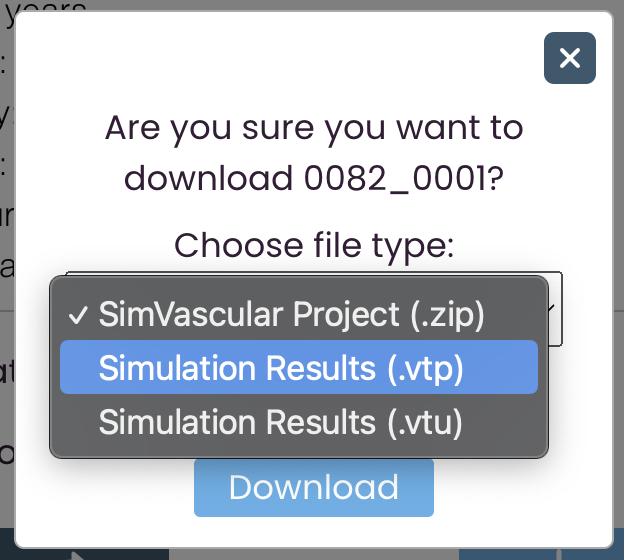
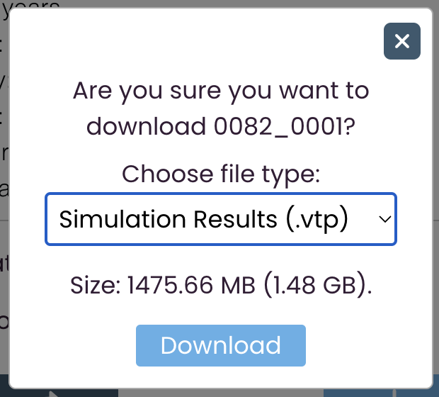
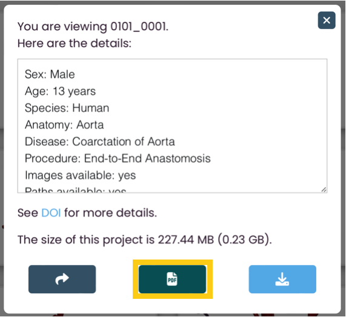

Using the Gallery
Helpful tools
To find the model gallery, visit the Dataset page.
To navigate the gallery, you may find the filter bar and menu bar helpful. To learn more about these features, go to Using the Filters and Using the Menu Bar.
To learn more about the files you can download, go to the Documentation page.
To learn more about sharing models with others, go to the Sharing Models.
Still have questions? Visit the FAQs page or contact us.
Viewing model details
On every model, there is a small magnifying glass icon on the top left. To learn more about one specific model, click on this magnifying glass and an informational panel will appear.


The informational panel tells you the name of the model you are viewing and, below the name, the details of the model you are viewing.


If the model has any additional notes, they will be shown under
the details window. You are able to view the size of the model's
SimVascular Project .zip files as well.


You can download the files of the individual model you are viewing by clicking on the download icon. If you click on this icon, a confirmation message will appear.
 

If simulation results are avaliable for the model, you will be able to choose which file type you want to download. As you change the file type, the displayed size will update.
 Clicking on the PDF button in the middle allows you to inspect the PDF description file associated with the model.
You can also click on the share icon to copy a shareable link. To view how to use this link, go to viewing a shared model.

To exit the informational panel, you can click anywhere outside the panel, or you can click on the close button located on the top right.
Selecting models
Instead of downloading or creating shareable links for individual models, you may want to work with multiple models at once.
To select and deselect a model to add it to or remove it from your collection of selected models, simply click or unclick on the model's image.


The example above demonstrates where to click and what a selected model looks like.
You can also select multiple models at once with the Select All icon in the menu bar. For more information on this feature, go to The Select and Deselect All Icon.
To view the models you have selected, click on the View Selected icon in the menu bar. For more information on this feature, go to The View Selected Models Icon.
Once you have selected the models you want to download or share, either click on the Download All icon or the Get Shareable Link icon. For more information on these icons, go to The Download All Icon and The Share Icon.